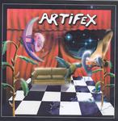

| Artist: | Artifex |
| Title: | Artifex 001 |
| Label: | self produced |
| Length(s): | 40 minutes |
| Year(s) of release: | 2005 |
| Month of review: | [12/2005] |
| 1) | The Green Robot | 3.40 |
| 2) | Let's Rumble | 3.03 |
| 3) | The Reliable Blue Line | 4.01 |
| 4) | Jack Falco | 4.11 |
| 5) | Bad Joke | 3.29 |
| 6) | Blazing Saddles | 1.58 |
| 7) | The Fuse | 3.29 |
| 8) | Xiphias | 3.57 |
| 9) | The Meditating Bear | 4.05 |
| 10) | Clear The Front | 2.54 |
| 11) | Disarmed (bonus Track) | 5.30 |
Jack Falco is a bit less loud, because we have acoustic guitar here (for the opening). But then the electric guitars come droning by again and we are back with the Spastic Ink styled fusion (maybe a bit less fickle). The song also has some more thematic work, for instance, right before the Spanish guitar sets in again. Bad Joke blazes away again, with quite a bit of fiddling around. With its stop-start character it certainly is not something to dance to. The song also has some typically jazzy noodling.
Blazing Saddles brings us into country territory. Yes, nothing is sacred to these guys, not even the cows. A likeness to Forever Einstein is apparent. The Fuse is quite a bit more in my line of appreciation, with an opening that reveals a certain tension. The meandering, ToneCenter style passage that follows pleases me less though, but still, as does the seventies groove guitar in the middle.
Xiphias continues the meandering style, but also has those moments in which the band raises a certain amount of expectation. The Meditating Bear and Clear The Front are quite similar as well in conception. Disarmed is a bonus track (I am not sure what makes it have this status, maybe the presence of vocals?). Due to the vocals, the music is closer to progmetal. The vocals do however introduce a bit more melody than usual.